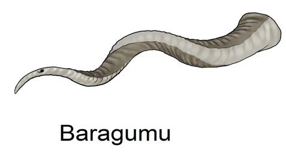
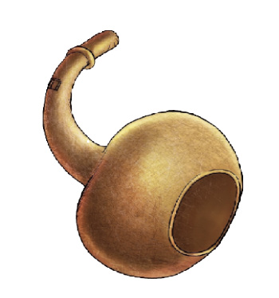

Lipenenga
Lilandi
Kielelezo namba 1: Ala za kupuliza

Kazi ya kufanya namba 1
Herufi a. Tafuta kipande kidogo cha bomba la plastiki, jani la mpapai, mti wa mwanzi au mnyonyo.
Herufi b. Tengeneza filimbi kwa kutoboa matundu madogo madogo kama inavyoonekana katika picha kwenye Kielelezo namba 1.
Herufi c. Fanya zoezi la kupuliza filimbi uliyotengeneza.
20